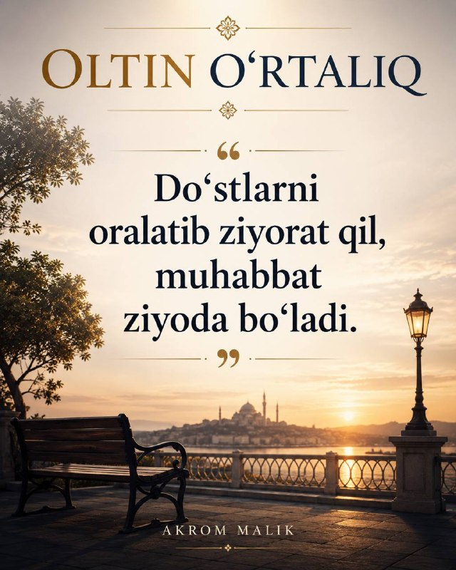

Insonlar bilan munosabatlarni uzmaslik ma’qul. Odamlar bilan uzoq vaqt aloqalarni…

Insonlar bilan munosabatlarni uzmaslik ma’qul. Odamlar bilan uzoq vaqt aloqalarni saqlab qolgan yaxshi yoki uzoq vaqt salom-alik qiladiganingiz kishilar bilan muomala o‘rnatmoq maqsadga mos keladi.
Shakllangan inson yangi do‘stlar ortidan yugurmaydi yoki eski tanishlari bilan rishtalarni kesishga ishqiboz bo‘lmaydi. Oqil kishi qadrdonlar qadrini biladi. Hamma gap ana shu eski qadrdonlarga ega bo‘lishdadir.
Atrofdagi odamlar bilan iliq va samimiy aloqalarni saqlab qolishning ilmi bor. Chunki hozir aksar yoshlarda, hatto kattalarda ham bir paytlar qalin bo‘lib, keyin sovub ketgan do‘stlar bilan bog‘liq achchiq tarixlar ko‘p uchraydi. Bu tarixlar yurakning yarasidir. Ana shunday yara va jarohatlardan kishi o‘zini salomat saqlashi kerak, aks holda, huzun va g‘am kishi iste’dodini o‘ldiradi, qalbini qoraytiradi, aqlini o‘tmaslashtiradi, ishlarini orqaga ketkazadi.
Odam o‘zidagi poklik va safoning qiymatini bilishi lozim. Hamisha ham fikrar quyilib kelavermaydi, hamisha ham atrof do‘stlar bilan gavjum bo‘lavermaydi, hurmat va ehtirom, sevgi va sadoqat doimiy saqlanib turmaydi, bular o‘zgarishlarga yuz tutadi, larzalar ro‘y beradi, yo‘qotishlar sodir bo‘ladi. Lekin bunday ma’naviy zilzilalarning oldini olish imkoni bor. Ana shuning ilmini Xudo qodir qilgancha baholi qudrat bugun o‘rganamiz.
Alisher Navoiy hazratlarining “Hayratul abror” dostoni oltinchi maqolati adab haqida. Buyuk bobomizning aytishicha, adabning namoyon bo‘lish o‘rinlari bunday:
1. Oila: xotin, bola va ota-onaga adab.
2. Xizmatkorlarga adab.
3. Kichiklarga adab.
4. Kattalarga adab.
5. Tengdoshlarga adab.
6. Davlat xizmati odobi.
Bularning har biri alohida sharh talab qiladi, ushbu o‘rinda ikki nuqtaga e’tibor bermoqchimiz: bolalar uchun hurmat deya o‘rindan turishni ulug‘lar adab deb sanamaydi, chunki buning oqibatida bola takabbur, sen obro‘siz bo‘lasan. Bu hazrat Alisher Navoiyning o‘giti. Biz iqtibos qilishni istagan yana biri bu: kim senga tengdosh bo‘lsa, unga shunga yarasha muomala qil: oshirib ham yuborma, tushirib ham yuborma.
Bizningcha, bu hikmatlar oltin o‘rtaliqni saqla degan qoidaga eslatmadir. Ya’ni o‘rtacha bo‘l degani. Mana shu so‘zlar orasida bobomiz ishlarning yaxshisi – o‘rtachasidir degan buyuk so‘zni ham aytib o‘tgan.
Insonlar orasidagi munosabatlarning buzilishiga eng katta sabablardan biri oltin o‘rtaliqning boy berilishidir. Haddan tashqari yaqinlashib ketish begonalashmoqqa olib keladi. Uzoqda bo‘lsang, kishnashasan, yaqinda bo‘lsang, tishlashasan.
“Nazmul javohir”da hazrat Alisher Navoiy ta’kidlagan yana bir hikmat: “Do‘stlarni oralatib ziyorat qil, muhabbat ziyoda bo‘ladi”.
Odam sevganini yo‘qotib qo‘yishni istamasa, vaqti-vaqti bilan o‘zidan sevgilisini xalos qilib turmog‘i kerak. Buyuk haqiqat ila ta’kidlanganidek, “Kimnidir sevsang, haddan oshib sevma, bir kun yomon ko‘rib qolishing mumkin. Kimnidir yomon ko‘rsang, bunda ham haddan oshma, bir kuni yaxshi ko‘rib qolishing mumkin”.
O‘ta yaqinlashib ketish aksar odamlarni bezor qiladi.
Shuningdek, izhorlarni ham yashirin saqlagan maqbul. Ko‘paysa, qadri ketadi, ta’sir qilmay qo‘yadi.
Bu ommatan xos bo‘lgan qoidadir. Hech qachon bir-biridan zerikmaydiganlar Shams va Rumiydirlar. Shams va Rumiy bo‘lishga ko‘zi yetmaganlar orani shamollatib turishlari kerak.
Lekin qalbi ishq olovida kuyganlarga bu nasihat foyda qilmaydi, u baribir sevganiga ergashaveradi, natijada, bir kuni sevgilisini mutlaqo yo‘qotib, keyin ichi muzday bo‘lib, ushbu bitilgan hikmat qarshisiga keladi va bu qoidani mahkam o‘zlashtiradi.
Yaxshirog‘i, avvaldan o‘rtacha bo‘lishni tutgan ma’qulki, bu og‘riq va azoblardan, ajralish va zorlanishlardan himoya va zirh bo‘ladi. Umuman, hamma bundan foyda topadi va hammasi ravon kechadi. Halokatlar ehtimoli ham kamayadi.
Akrom MALIK